原计划这篇《每周转载》应该聊聊 “于欢案/辱母杀人案” 或者是 “泸州太伏离奇死亡事件”。但是前几天郭文贵与朝廷方面【狗咬狗】，由此引发的轰动效应，犹如当年的王立军（王立军叛逃美国领事馆，也是一出狗咬狗的宫廷大戏）。
熟悉本博客的老读者应该都知道：俺一贯丧心病狂地攻击党和国家领导人。这次逮到这么好的机会，当然不能错过 :)
在本文开篇，先提醒大伙儿一下：今年是2017年，也就是召开【十九大】的年份。大伙儿可以回顾一下2012年（那年召开十八大），出了多少精彩的宫廷大戏（全都是狗咬狗）。所以，今年是非常值得期待的一年，应该会有一些好戏上场 :)
★美国之音（VOA）直播郭文贵访谈，中途被掐掉
（编程随想注：
郭文贵已经爆料几个月了，但是俺一直没有给予太大关注。因为俺觉得此人的爆料，未必靠谱，可信度未知。直到前几天，郭在 VOA 的直播【中途被掐掉】。这反而引发了俺的兴趣——能迫使【美国政府旗下】的 VOA 中断直播，这里面必定大有文章！
从某种意义上说：“直播异常终止”让爆料的影响力至少提升了一个数量级。假如这真的是朝廷方面的授意，那就是一个非常非常严重的败笔）
直播时的现场照片
◇相关报道
《美国之音专访“红色通缉犯”郭文贵，突然中断 @ RFA/自由亚洲电台》
《美國之音直播中斷，內部發生激烈爭執，並非白宮下令 @ 明鏡新聞》
《國會已關注直播美國之音中斷事件，龔小夏東方楊晨被休假 @ 明鏡新聞》
（编程 随想注：以下是这篇报道的部分摘录，粗体是俺标注滴）
據《明鏡郵報》了解，參與直播採訪郭文貴的美國之音中文部主任龔小夏、資深編輯東方、負責網路傳播的資深記者楊晨已開始被休息一周。
不過，公民力量的楊建利和民運領袖魏京生，已經要求美國國會展开聽證會。已有美國國會議員與龔小夏接觸，廣播委員會也已約談龔小夏。亞太執行主編張晶（Managing editor of East Asia and Pacific Division.）則如常領導美國之音中文部的運作。
過去幾天，《明鏡郵報》從北京、華盛頓、紐約採訪所得，美國之音直播專訪郭文貴3小時，是得到美國之音官方批准的，之所以後來出現變化，並非美國之音聲明所言，原定只有1小時，而是受到中共影響所致。
4月17日、18日，美國之音駐北京記者被中國外交部約見，其中18日的會談，參與者寫了一份報告給華盛頓總部。《明鏡郵報》獲得了這份報告
......
18日，中國駐美國大使館官員打電話給美國之音負責對外聯絡的紀鋒，據說用語比較客氣，但明確要求美國之音不能直播專訪郭文貴。
紀鋒隨即將中共官員的意見報告給了張晶、龔小夏等人。張晶則轉報告給了人在非洲的台長阿曼达·贝内特（Amanda Bennett）、負責日常事務的常務副台長（日裔）管原彥（Sandy Sugawara, deputy director of voice of America.）、副台長（台裔）趙克露（Kelu Chao, associate director for language programming），從此，美國之音內部就是否如何直播專訪郭文貴出現了分岐。
參與專訪節目工作的各位編輯、記者，幾乎都堅持按原計劃直播專訪郭文貴。
根據《明鏡郵報》了解，張晶主張將直播節目改為15分鐘，並要求資深編輯陳健通知負責《時事大家談》統籌的寶申，以安排其它節目填補空出的時間。陳健當即拒絕轉達令。
張晶要求負責網路傳播的資深編輯李肅配合縮短節目時，李肅予以拒絕，說：除非你拿來書面文件。
而寶申18日當天（之前《明鏡郵報》錯報為19日）明確表示：除非你派兩個保安將我架走！
18日晚，中共利用香港兩家媒體，報導了國際刑警組織對郭文貴發出了紅色通緝令。知情人士對《明鏡郵報》說，很多人對紅色通緝令並不了解，其實紅色通緝令譯為“紅色通報”甚至“紅色廣告”更合適，是一個會員國出錢刊登的廣告，並不一定有法律約束力，更不是要求各國的法律執行令。
觀察人士對《明鏡郵報》指出：紅色通報出現之後，加深了美國之音管理層就此事出現的分岐。
《女主播戴白花，抗议郭文贵直播遭“腰斩” @ 苹果日报》
（编程隨想注：以下是这篇报道的部分摘录）
流亡富豪郭文贵接受美国之音（VOA）访问，爆中共高层贪腐的直播节目突然被中断，事件持续发酵，VOA内部有员工以各种方式表不满。其中女主播郑裕文更胸戴白花主持节目，俨如28年前六四屠城后央视杜宪、薛飞穿黑衣主持”新闻联播”翻版；获网民点赞。
◇网友评论
美国之音 东方：
所有的電郵我都看到。所有的情況我也知道。只是現在內部正在調查。作為聯邦政府僱員，我不能違反規定，將公司內部的電郵和情況，向外公佈。
一些人權組織和非政府組織已經要求美國國會就這件事進行聽證，屆時所有的事實都會真相大白。
我們的故事也非常精彩......
何清涟：
这几天真相正在逐渐浮出水面，虽然远非全部，请耐心等候。美国是个法治国家，不会允许外国政府干预本国言论自由。
龚小夏、东方的采访符合新闻专业主义：在质疑、辨诘中查证信息的真实性。
已经有人为误骂她而道歉。
nyhopin：
赵家不是解决问题，而是解决提出问题的人，这次又是一明证。
赵家反腐秀早已破产了。
官场观察工作室 昭明：
龚小夏主持绝对好啊，中断直播谁是大赢家？郭文贵与明镜！几乎无限放大了核爆效果，天赐良机！
还暴露了特务卧底，以免以后继续害人，上哪儿找这好事！
红通就已经是大昏招了，中断直播就是更大的昏招！
形势不是小好，而是一片大好！
陈维健：
张晶负责10个语言组的编辑质量监督和运作。张晶于1992年加入美国之音，历任不同职位，包括：记者、编辑、电视\电台主播和制作人。
他毕业于北京大学并在1986到1988年间在国际政治系工作。这个系基本上是做政治特工的，应该是中国的卧底。
这一次必是受到了北京的直接指令，掐断了采访。
缪伟：
实际上掐断了节目的播出比节目暴露出的信息量更大，这客观证实了节目内容的真实性。
变态辣椒：
ZhaoMingObserve：
习办致电美国之音，请暂停郭文贵专访直播，等我先把傅政华先抓起来，不然政治局里其他的常委会指责我习近平包庇……
不惧名
连美国之音都害怕了，不敢继续说话了。
谁还敢实话实说啊？！
所以，对不起了，我只能说我更害怕......
★郭文贵爆料：王岐山家族幕后操纵海航
东厂王公公神情黯然
◇郭文贵本人的说法
郭文贵：
因为有王岐山控制180万亿的金融帝国帮助他们抬股价．海航那股值还不够买十幅最历害的唐卡送姚庆先生呢！
谁敢和我签合同对赌海航股票会在一定时间内一文不值！
郭文贵:
文贵送给纽约时报傅才德先先生和亚历山德拉．史蒂文森女士．明镜TV．美国之音．及所有关心中国人民的朋友的一个大礼物……
就是从这些信息你们可以找到让你们想知道的信息和证据！
这是为了他们录制马健副部长视频的一个小小的回应！也是对我的被非法关押消失了三年的员工家人的一个小小的回报！
郭文贵:
尊敬的网友们好：下面的信息是打开王岐山书记与海航的关系的另一个窗口．
飞机航行记录．乘客信息．特别是私人飞机上的隐私排他性．及飞行的目的地都是不可更改不可删除的相关最好证据．所以多个国家法官将这样的信息直接定为涉案证据。
你们可以从下面20O9年的飞行记录看到什么呢？一切都是刚刚开始

◇网友评论
编程随想注：
来解读一下上面第1个表格。话说俺那个《太子党关系网络》又可以补素材啦 :)
姚庆（YAO QING）——正宗赵家人，（当今常委）王岐山的外甥，（80年代常委）姚依林的外孙。
王健（Wang Jian）——海航的董事长
王伟（Wang Wei）——王健弟弟
王正（Wang Zheng）——应该是上述俩兄弟之一的儿子
陈超（Chen Chao）——海航公子，微博是 @HNA超爷
童甫（Tong Fu）——海航集团董事局董事、海航科技物流集团董事长，微博是常与 @HNA超爷 互动的 @ERIC童
曩麒（Nang Qi）——海航旅业总裁
张伟亮（Zhang Weiliang）——海航集团运营总裁
赵俊（ZHAOJUN）——此人与民航局运输司的官员同名，但网友根据生日进行人肉搜索，发现是个模特。照片和简介如下
编程随想注：
王岐山家族出现严重腐败，再次印证了——天朝的腐败是【制度性腐败】。关于这方面的分析，请参考俺的旧博文：
《分析“制度性腐败”——为啥天朝的贪官屡禁不止？》
陈闯创：
我之前的猜测有误，现已查清，海航这架代号2-deer（即too dear太昂贵）的787私人飞机是2016年9月14日正式由波音交付海航。
老郭这份名单中的16人至少有13人（包括姚庆）在今年2月20日同时抵达波音公司，原因不明。
Jerry Chou：
一边是央行疯狂减杠杆，禁止资本外流，老百姓换个美元都没戏；
一方面是红色权贵们大把高杠杆，任意全球购，资本随意流出全球发大财。
数万亿规模的红色权贵资本，又何止海航、安邦？
这国家已经完了！
chinayvan：
海航发展史，几乎就是“单车变摩托”这句话演绎得淋漓尽致的范例。
从1989年海航集团以1000万资金起家，到现在的发展历程就是一部并购再并购的狂野生长史。
查看海航集团的大股东到底是谁为何如此有魄力，出现的结果却让我们大跌眼镜，海航集团的第一大股东居然是一家叫慈航公益基金会的组织。
何清涟：
真心期望当年勇揭中共高层家族敛财内幕的《纽约时报》勉力再战，想法拿到海航近年来个人股东资料（上市公司必须在证交所报备这些资料），查明其真正身份，与郭文贵揭露的资料相互印证。
如果能够深入挖掘后写成报道，明年铁定再获普利策奖。
仧长老：
带公职警卫乘私人飞机？副总理配偶（注：姚明姗）私人活动可以带警卫乘私人飞机？
首长知道吗？
Dajun Zhang：
姚庆的爷爷姚依林主张计划经济，是为了把中国继续掌控在自己人的手中；
姚庆的姑父王岐山是所谓的改革派，是为了让自己人能够通过所谓的“市场改革”掌控更庞大的资源体系；
姚庆成功地实现了他爷爷和他姑父的目标，这就是所谓计划与市场争论的终极结果。
可以说，除了权贵家族，所有中国人都上当了
Dajun Zhang：
海航公关公司开始直接威胁发布海航信息的人，官方也开始删帖了
变态辣条：
王岐山算是彻底完蛋了！王公公走好！从反腐第一天就不是正义的！
★郭文贵爆料：王岐山家人“高空寻欢”，网友戏称“一日千里”
（编 程 随 想 注：
王岐山是姚依林的女婿，姚依林是上世纪80年代末的政治局5常委之一，也是镇压六四的刽子手之一。
此次“高空寻欢”的男猪脚【姚庆】是王岐山的外甥）
◇郭文贵本人的说法
郭文贵:
这位反贪首长的家人玩模特的数量方式和全人类的空中唯一的波音787为他私人定制几十亿元的飞机上在全球干的事情超出了全人类的人们想象．
这已经不是秘密……世界上很多国家的政府及有关人员都掌握．
文贵不是007．也不是警察．更不是法官．我不能什么都可以做的到．但我是个聪明人．勇敢的人．有责任感的人！也请大家不要再花时间关心我的安全问题．
文贵从掌握这些资料之日起就已经将生死置之度外．我如果不将事实公布与众．我将无法面对我自己的家人员工．同胞．和这个国家！
宁可轰轰烈烈的死 文贵也不愿坏着良心的苛且的生！
一切都是刚刚开始！
郭文贵:
飞机上疯狂空中乱做爱的！大家别忘了．空中私人飞机上的这种模特首长级做爱每小时综合成本约16万人民币．而这些钱是他们直接以贷款的名义骗取老百姓的保命存款钱干的！
一个人就搞定了几千亿呀！所以我不在乎任何人信不信！这已经不是习主席和任何一个领导人的事情了……这是国家的灾难……事关老百姓的基本生存权．社会稳定．国家安全．
所有的人不要在以自己道听途说的那点本事演说这事关国家安危．十几亿人民被几个政治流氓．盗国者强奸欺骗的国家事件了！
此事件与政治．政斗无关……不要用自己无知自私的那点胸怀点评这些事了！你们很快会为此付出沉重代价的！这个事件100个习主席也不敢以个人
郭文贵:
这个世界上唯一为一个人定制的787私人飞机．每小时成本为6－8万美元．既每小时飞行成本30一40万元人民币．
大家不要向文贵要证据．任何人都可以查得到．该飞机飞行的乘客信息．飞行记录．
这架飞机从购买的第一天到精装修直到现在他存在的每一秒钟都在我的视线之中．我会让全世界知道的！
郭文贵:
这是曾畅在飞行记录中定义为常委级的绝密的航班记录：我每次看到这样的王岐山书记的家人这样的信息．我在想想主席台上的．电视里的．报纸上的．王书记
我真是不希望我看到的是真的．我曾经为他的才华．和言讲当着全家人的面感动的流泪……我曾说中国要是有100个王岐山我们真的会成为让人尊敬的国家了
◇网友评论
Joseph Lin：
曾畅的出生日和这个是吻合的。
官场观察工作室 昭明：
网络搜索曾畅结果：曾畅，女，1990年5月12日出生，河北人，第60届世界小姐中国区总决赛32强选手。
湖水般清澈的眼睛，总是透着纯真而不乏智慧的光芒。回眸一笑间，足以让所有人为之折服。
这就是曾畅，这就应该是郭文贵文中提到的性玩物模特曾畅！
废话就不多说了，看图吧！
Freeman：
领导的品味并不高，但是领导的钱很多。
释大成：
郭文贵先生揭露这个名模曾畅，与高官在飞机上一日千里。
这个消息让全世界震精。
当然这个消息也传到曾畅这里，她发了一个博文想澄清，现在她所有的博文都消失了。
此地无银三百两，不打自招呀！
achille10317588：
曽畅在微博已经敏感词了。
想想我们傻逼的中共如临大敌，反应如此迅速，多可笑！多可悲！
郭文贵是火种，已经烧的他们焦头烂额。
我们也要再添一把火，烧死这腐朽的政权！
Dajun Zhang：
这次爆料和巴拿马文件有何不同？巴拿马文件只是表明权贵有海外公司，但没有具体细节，民众不了解离岸公司是什么玩意。
这次爆料有非常具体的细节：海航股份，习近平授意调查王岐山孟建柱、最豪华的私人飞机，女模特，这些都是一般民众喜闻乐见的。
中共要想像对巴拿马文件一样迅速封锁信息，没门！
陈闯创：
这个表格虽短，信息量不少。
且不说姚庆和曾小姐，裴男男据称是原共军国防大学校长裴怀亮上将之子；
吕长胜在试图帮助宝能控制万科时被披露与习包子姐姐齐桥桥关系密切。
据可靠消息，2016年11月10日波音787私人飞机从北京飞偏远的美国新罕布什尔州，两天后转飞波音机场接人返回北京。
周锋锁：
备注，王岐山老婆姚明珊出现在这个名单。
这几个人在一起做啥呢？

蛤ppy together：
郭怎么知道人家在飞机上啪啪了？难道是手上有小视频？
西诺：
给海航波音787做飞机装修的公司是坐落在美国的卡斯泰尔（Kestrel aviation)公司，这家公司也是与郭文贵做飞机装修的同一家公司。
据可靠消息，郭花钱收买了这家公司在这家飞机上安装了窃听装置，郭可以全程监控租用该家飞机的乘客。
郭费尽心机终于拿到了他需要的淫秽录像。
LifeTime视界：
王岐山腐败是郭文贵第一个曝光的吗？不是。
1）早在2012年，海外媒体已曝光王岐山家的加州别墅。
2）前年，美国司法部调查摩根大通与中国官员权钱交易案件中，涉及20多位中国部级官员，王岐山大名排列其中。
LifeTime视界：
郭文贵做不到反王不反习。郭爆料王岐山等腐败，同时期望“习主席”明察。这很难。
中共一直垄断“反腐权”，他们对民间或海外反腐视为捣乱，甚至视为敌意。
比如《纽约时报》翔实报道温家宝家族贪腐，不仅几名记者被驱赶出中国，有的记者还遭生命威胁。
习不仅不会领情，而且会加害郭。
悠闲的小匠人：
要搞清楚一件事：如果姚家单方面利用了与王的关系做非法的事，王不知情，那是姚家在犯罪；如果是王利用自己的职务为姚家谋取利益，那是王在犯罪。
现在爆出来的只能说明姚家有问题，但王是否有问题显然不能判定。
简单点讲，一个人犯了罪，他老公或老婆是不是也是犯罪了？
H W：
@悠闲的小匠人
王的老婆都爆出来了，王不知道自己家人这些事吗？
什么姚家，王家。王不就是靠姚家上位的吗？
没有王，他姚庆能拿到这些贷款吗？
蹇驴得志鸣春风：
人装的太像人了，那就不是人了，王73这人是有才有能力的，但是他是绝户，易情效应而导致心理扭曲。
一句话，绝对的权利导致绝对的腐败，不是73太弱，实在是中共制度腐蚀能力太强。
CookBryan：
@蹇驴得志鸣春风
王有个屁才！只是会当奴隶会装逼罢了。这种土包子，让他在美国这种政府机构，他啥球也干不了
这群孙子没有才华，有才华都埋没了。
他老丈人是当了14年副总理，这才有他的地位。
你瞧瞧这些中南海的、地方的省长，哪个不是靠爹吃饭？
所以我绝不认可他们有啥才。
hnjhj：
现在坐飞机遇到航空管制的情况都会自动脑补：
“尊敬的乘客，由于上空的首长还没有结束前戏，请耐心等待”；
“尊敬的乘客，首长已经中出完毕，航班马上可以起飞，请做好登机准备”。
Dajun Zhang：
【习近平与姚庆的对话】
包子：姚庆，你在空中把人家模特XX了，网民们都在议论纷纷，不怕影响我们红色家族的名声么？
姚庆：你不是一直教导说红色基因代代相传嘛？我这是向你学习呀。你当年上彭丽媛，可是轰动了全世界。我也只有靠飞机才能达到你的高度。
★谜一样的海南航空——发家史及幕后老板
（編程隨想注：郭爆料之后，已经有人开始挖海航的内幕了，确实跟权贵家族颇有瓜葛）
◇相关报道
《从1千万到1万亿, 海航集团像迷一样的存在》
搜狐的报道（已经被河蟹吃掉）
新浪的报道（已经被河蟹吃掉）
知乎的讨论（已经被河蟹吃掉）
（编程隨想注：这篇报道在国内几个大的门户网站刊登，但都已经被河蟹了——如上所示。既然真理部对此文如此恐惧，俺干脆【转贴全文】）
最近杠杆收购之风愈演愈烈，那边要“防范高杠杆收购风险，实施穿透式监管”的话音刚落，海航集团旗下的上市公司海航实业以近68亿人民币收购了新加坡物流公司星洲物流集团。发起这项收购的海航实业市值仅仅38亿元，很显然这又是一次以小博大的杠杆收购。而鲜为人知的是，长期以来在背后挥舞海航集团收购杠杆的不是一般意义上的公司，居然是一个社团。
不是洪兴是基金
翻开海航集团的发展史，几乎就是把“搏一搏单车变摩托”这句话演绎得淋漓尽致的范例，仅在最近两年海航集团的海外并购总额就已经超过400亿美元。从1989年海航集团以1000万资金起家，到现在的发展历程就是一部并购再并购的狂野生长史。然而当我们想查看海航集团的大股东到底是谁为何如此有魄力，出现的结果却让我们大跌眼镜，海航集团的第一大股东居然是一家叫慈航公益基金会的组织。
初出茅庐
海航集团是以我们所熟知的一家航空公司——海南航空起家，三年起海航集团立足航空业的同时不断资本运作进行杠杆收购，或许脾气相投的缘故，2005年居然吸引到投资大鳄索罗斯的2500万美元的投资。这笔投资的份额对索罗斯来说微不足道，但带给海南航空的无形收益不言而喻。
分久必合
到了2001年10月，海航集团的股东变成了海南交管和广州建运投资有限公司，后来广州健运投资有限公司更名为“洋浦建运”。这个海南交管其实是老面孔，就是前面说的1998年海南集团的众多股东之一海南祥云更名而来哈。
此时海航集团的股权已经非常集中，股东已经只有这两家公司，其中海南交管出资3.5亿元占 70% 股份，另外 30% 为洋浦建运所有，此时我们故事的主角海航集团的注册资本也仅仅只有5个亿。
这里发生了地一个有意思的事情，这家洋浦建运在工商注册资料里查询不到相关登记。不能排除仅仅只是为了完成股份公司结构而拉来凑数的壳公司。
暗渡陈仓
你以为海航集团从此变成外资企业了？不。可没有这么简单。
不久之后这三家外资公司中的两家持有的海航集团股份转让给了“海南航空有限公司工会委员会”（以下简称海航工会），此时的海航工会成为了海航集团的实际控制者。这些转让是无偿的，也就是说这两家外资企业转让股份给海航工会不收分文。
瞒天过海
你以为这样神奇的事发生之后海航集团从外资企业又变成了职工集体所有企业？不。事情没这么简单。
首先这个海航工会不是一个字面上会发生误解的的工会组织，也就是说它纯粹和普通意义上的工会组织搭不上关系。
其次，这也不是一个职工持股会性质的集体集资持股组织。说白了吧这个所谓公会组织但实际成员若干人，他们并不是海航集团的工人跟工会也没有任何关系，就是成立的这个组织叫“海航工会”。你们完全可以把这个组织叫做成“兄弟会”、“骷髅会”，只是这个神秘组织创办者偏好“工会”这字取那个名字而已。
接下来请注意，海航集团的发家史来了。
天降横财
2002年海航集团发起设立海口新城区建设开发有限公司（简称海口新城），海航集团共计出资5000万元。但到了2004年7月该公司的控股股东却成了扬子江地产集团有限公司。接下来这家扬子江地产做出了一个匪夷所思的举动，向海口新城注入了高达40亿的土地资产，并且没有要求扩大注册资本。海口新城则已40亿土地资产增资海航集团，成为持股 88.89% 的最大股东。
到了2008年7月，扬子江地产神秘退出了海航集团股东行列。40亿元土地资产被原来的小股东海南交管和洋浦建运全部接收，一夜之间“鸟枪换炮”。扬子江地产40亿白送！这样的好人请给我来一打。
南征北讨
有了这40亿资金作为“种子”，海航集团通过发行债券、定向增发、银行贷款等多种方式筹措资金四处进行收购。
2009年底海航集团资产总额达到553亿。
到2015年，6年时间海航集团资产总额再增加8倍，达到近5000亿元，控股及参股10家上市公司。
冰山一角
海航集团的规模越来越大，其真正大股东海航工会一直引发猜测和疑问。最终海航集团不得不想办法解决，而解决的办法最终让海航集团的实际控制人露出冰山一角。
变身之后的海航集团作风仍然没有改变，还是那熟悉的味道。在此后的数年里海航集团继续坚持高杠杆扩张。从2015年到2017年也是海航集团扩张最凶悍的2年，目前总资产已接近万亿。
7人富豪
航空起家、神秘扩张、旋风收购，不论讳莫如深的海航工会，还是疑问重重的慈航基金，在这些资本江湖的奇闻轶事背后，是海航集团不到20年总资产从数亿到近万亿倍的辉煌业绩。
而幕后的掌舵人——7个创始人，堪称最深藏不的中国隐形富豪，至今仍是谜一样的存在。
在投资市场有这么一句话：历史不会单纯的重演，但总是惊人的相似。
《新京报：海航“迷雾”——股权结构复杂隐秘 国开行授信1000亿》
（编程 随想注：以下是这篇报道的部分摘录，粗体是俺标注滴）
据报道，自今年年初以来，海航至少参与了12宗并购交易案，包括洽购瑞士机场零售商Dufry、美国商业杂志《福布斯》以及德国国有银行HSH Nordbank的一定数量的股份。此外，海航还收购了德意志银行4.7%的股份，以及以7.75亿美元收购嘉能可石油产品存储业务51%的股份。
海航较近的一次收购发生在本月初。4月9日，海航集团旗下香港上市公司海航实业发布公告称，拟以13.99亿新加坡元（约合68.72亿元人民币）收购新加坡物流公司CWT全部股份。
4月21日，兴业证券发布的研报称，2016年至今，海航集团两年内并购耗资300亿元。但公开数据显示，海航集团两年内并购的耗资远大于这个数字。
公司秘闻（微信ID：high3c）注意到，截至2015年底，海航集团资产总额达4687亿元；而在2005年时，海航集团的资产总额是189.6亿元。十年之内，海航资产增加了24倍。
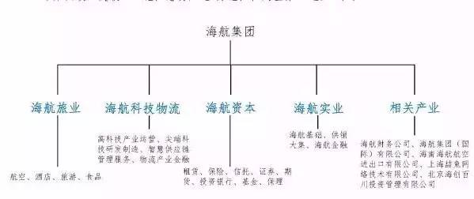 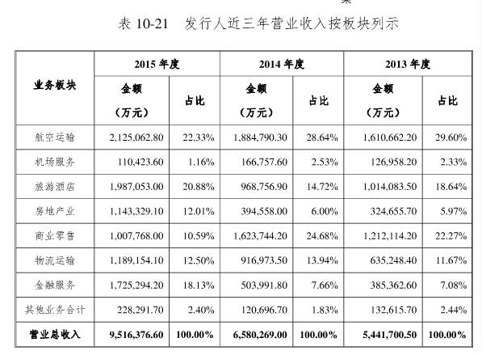 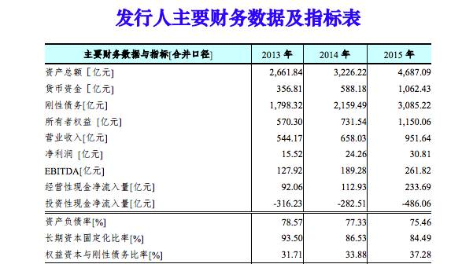 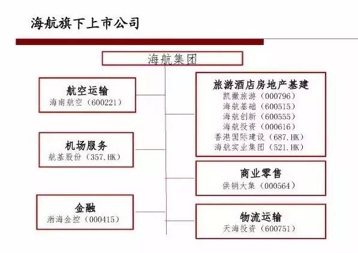 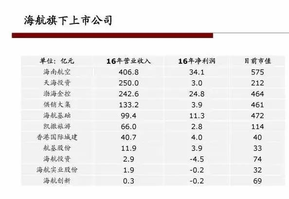 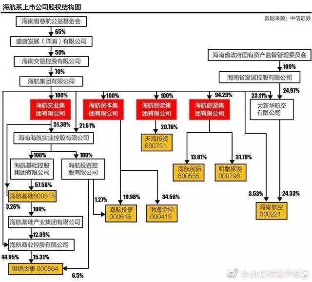 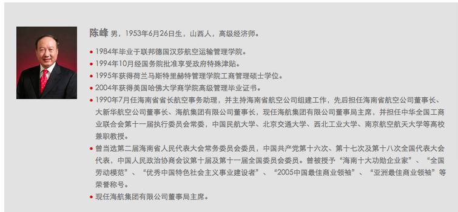 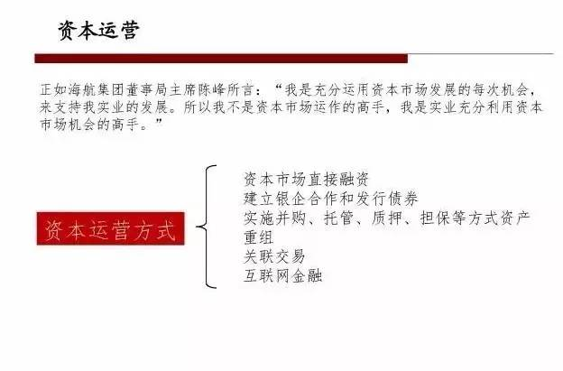 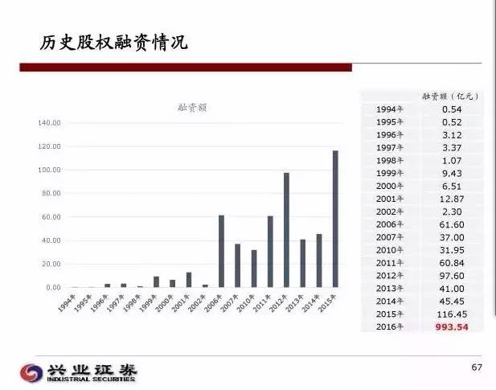 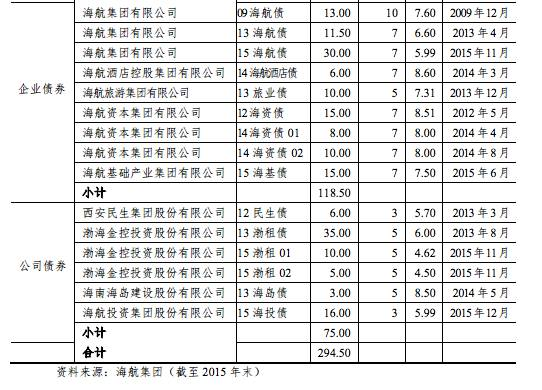 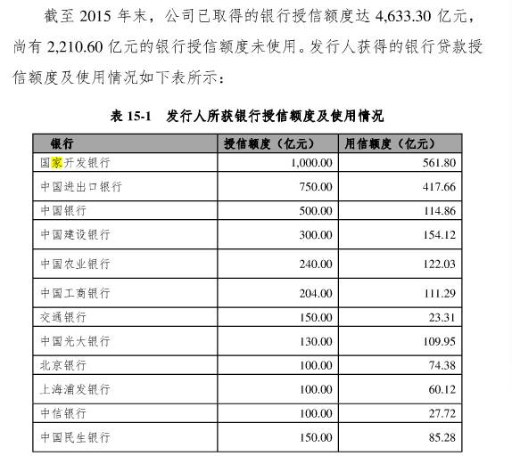 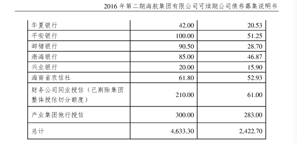
《凌通社：谜一样的海南航空，值21亿只服务一人的飞机火了》
（編程随想注：此文来自微信，已经被和谐，上述链接是墙外网站的镜像。以下是此文部分摘录）
一夜之间，海航那家引进的21亿只服务一个人的波音787飞机火了！
网上找到的这架飞机的信息是酱紫的！当然，凌通社知道，你最关心的是床！高空的床！
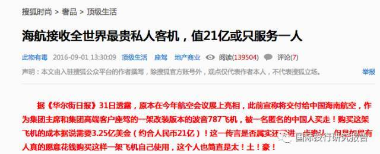
中信证券的这张股权结构图，告诉你这样一个事实：湖南航空的控股股东是【海南省慈航公益基金会】。
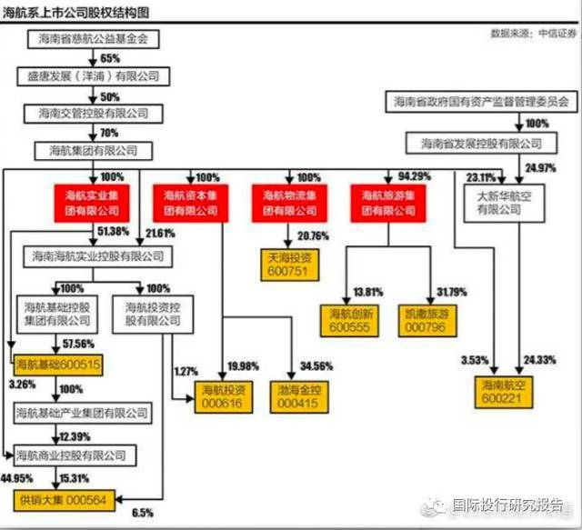 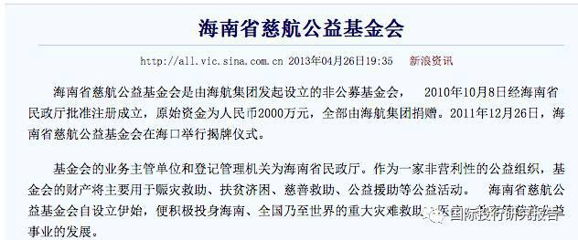
兴业证券的研究报告也显示了海航从一家【1000万】国资公司成为【1万亿】民营公司的过程！
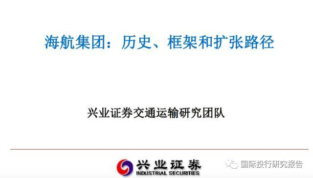 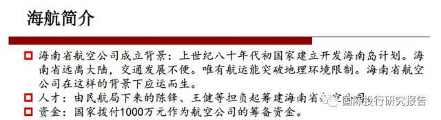 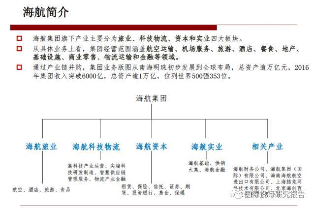 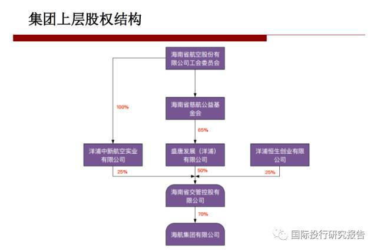 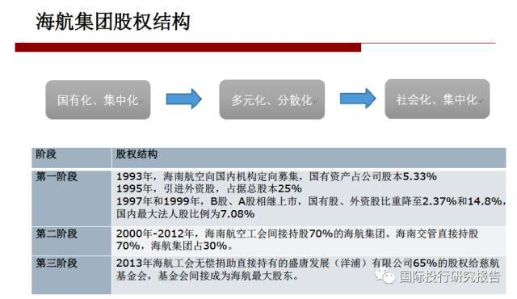

《郭文贵爆料发酵：海航红色资本家和豪华专机 @ BBC/英国广播公司》
◇网友评论
Johnny：
我挖出來了。陳超，海航主席陳峰之子，海航集團太子爺。微博叫「HNA超爷」。
現持有美國護照。曾通過國際投行內部的子女計畫就職於摩根、瑞信、德銀。之前已經被美國當局查出來罰款了。
他的微博全是環遊世界享樂的證據，還與多個女模調情。
有興趣的可以去他微博，更多看我推特
Johnny：
圖一，陳峰家族合照。
圖二，跟香港巨富李兆基合照。不知這兩人什麼關係。
圖三，陳超是美國公民，持有的美國護照。

robin：
王健是海航集团二号人物，副董事长，全年飞行记录100多天。
我之前在海航工作过，了解一些，他也是陈峰的指定接班人。
另外陈峰讲话非常狂妄，小学毕业，而且把海南省委书记都不放在眼里，讲话中对罗保铭非常轻蔑。
当时我搞不懂，以为他傻，现在才知道，原来朝中有人啊！！！
方槍槍/1974：
童甫 （海航集团有限公司董事局董事）
童甫，男，1982年6月出生，籍贯湖北宜昌，中共党员，海航集团有限公司董事局董事
===百度百科提供.......
鳥：
海航的公子哥是不是第二个瓜瓜？
http://mp.weixin.qq.com/s/ylb9yFHKdd9xpI26_hSlDA
由于众所周知的原因，近段时间大家都在八海航的公子陈超。
陈超的微博 @HNA超爷 被翻了出来，随手看了看，挺有意思，透露了很多个人信息。
鳥：
这位海航的陈超公子，没准还跟王珞丹好过？2014年的微博留言互动让人遐想...
鳥：
这好没好过不知道，但俩人的交情应该还挺不错。
一个大手笔包场支持票房，另一个体贴淘宝眼罩慰问。
P.S.从包裹地址栏可以确认，博主即陈超，恩
鳥：
除了王珞丹，种丹妮也是好友。倒是一直迷恋的佟丽娅没有过互动。
这位公子哥的微博，透露了好多个人信息
鳥：
陈超（左一）还有个兄弟，叫陈晓峰（右一）。曾用微博名 @海航少爷，不知道现在叫什么
鳥：
榜单上另一个角儿——童甫的微博 https://weibo.com/u/1802156943
鳥：
啊咧，被海航公关找上门啦。获得成就 #被公关#
ZhangDajun：
网友可以凭网上信息起底陈超，却很难起底姚庆。
个中缘由在于，统治中国的权贵家族一直都采取黑社会的手法，他们不仅在政治上黑箱操作，经济掠夺上黑箱操作，他们的日常生活也都在黑箱中。
他们真的像鬼魅魍魉，无所不在却不为人知，操弄一切却面目模糊。
只有民主的阳光，才能让这些黑暗力量无所遁形
bingliqiang101：
说到海航，由于有项目合作，去过多次海航总部，海航企业在当地的影响力超乎想象。
无论地产酒店还有金融一一涉足，当地人以成为海航员工为荣，进入海航意味着稳定高薪。
但是海航的项目负责人胃口真的很大，开口就是合同额的几分之几占比，还必须税后。
哈哈，不说了，再说就漏了。
★海航价值21亿的全球顶级豪华客机——这可是“赵家人”专用哦
（編 程 隨 想 注：下面是俺从网上收集的相关照片，让大伙儿见识一下这架飞机内部的豪华）

改造这架飞机的红隼航空（Kestrel Aviation）航空咨询公司的首席执行官史蒂夫·韦拉
装修都用特殊材料，看起来和普通家具差不多，实际上要轻很多并能承受住突然增加的压力，以保证在特殊情况下不至于垮掉
很多材料还拥有很高的隔音性。飞行过程中的噪音大约48分贝，而普通787飞机客舱噪音值大约是70-72分贝
飞机的休息室。前部是一个影音室，设有55寸的电视和沙发床；后部有多个座椅，方便用餐及开会；后墙上有2个47寸电视
终于开始秀重点部位——主卧——显然这就是【高空寻欢】之所在，即使跟奢华酒店的卧室相比也毫不逊色
主卧的卫浴也是全机5个卫生间中最奢华，有男/女两个面池和自动温热地板，甚至能确保水的流速在空中也与地面完全一致
★网友热议“权贵家族”
LifeTime视界：
王岐山用口头语“十八大后还不收手”吓唬权贵，但自己家族捞的更猛。
还是那个简单道理：如果反腐不交给法律和社会公开监督和处置的话，谁领导反腐，谁就是最大腐败者。
看看过往邓家、江家、胡家、温家、习家，哪家不是富甲一方？
这是中国最大特色之一。
lO90F0s4rLSGNxN：
看看這些入股北京銀行的新貴們，你才知道”勤勞致富“這句鬼話多麽的具有欺騙性！
鄭若舜Yorkson：
撒旦问：你咋弄钱？
流氓：抢！
撒旦又问：那你咋玩女人？
流氓：强奸！
撒旦轻蔑地说：你玩女人、弄钱的手段太低级了。你看我，管住金库，想花钱就签个字；另外，别人还抢着给我送钱，送美女；美女也主动勾引我。
流氓羡慕不已地问道：你咋做到的？
撒旦淡淡说：为人民服务，以人民的名义！
guohaiyancn：
赵家人演着《人民的名义》，赵国人演着“名义上的人民”。
ZhangDajun：
包子的政绩：09年四万亿之前中共权贵家族财富充其量还是千亿计，包子上来才几年，万亿家族已经十几二十个了。
眼看这些权贵家族资产动不动以万亿计，那些100亿200亿的省部级官员心理能平衡吗？
王健林伸着小拇指教训年轻人：把赚一个亿作为小目标。
考虑到那个语境，太正常不过了。
閻國民：
那些将财产转移海外的人，在主席台上高谈阔论爱国时，他们的演技超越了奥斯卡小金人！
★郭文贵爆料：傅政华暗中调查王岐山
（編程随想注：
傅政华如今是公安部常务副部长，党组副书记，相当于“正部级”。
这个是猛料，但郭尚未给出过硬的证据）
◇相关报道
◇网友评论
数据新极权论者：
郭爆料倒王这一点无争议，有争议的是郭是挺习还是反习？
如果郭是挺习，完全只需要爆王的料，而没必要爆出习让傅调查王这一细节！
所以，郭不可能挺习。郭爆料的目的就是习王相斗、渔翁得利。这是一个三方（或多方）博弈的过程。
赵岩：
傅政华是三姓家奴，为了防止日后王岐山习近平清算他，他利用郭家几百口人质，企图利用老郭在海外资金和人脉优势，做交换，把老郭为己所用。
昨天有些分析师根本部不了解傅政华的心理动机，侃的不着边际。
这是傅政华自保的险棋，他玩大了，玩陷了。下场是比任何一个官员死的更惨！
唐伯虎：
没有习近平点头同意，借给傅振华十个脑袋，他也不敢调查王岐山的贪腐证据。
郭宝胜：
我相信郭文贵的爆料不是空穴来风，因为是傅政华提供的基本身份信息给郭文贵，郭文贵才可以顺着基本信息去挖黑幕。
只有一点要存疑的是，为什么傅政华把机密给郭文贵说，第二为什么傅政华不履行诺言来激怒郭文贵来爆料，需要拭目以待。
幸福相伴：
@郭宝胜
马建在事前已经把东西给了他而已。他只不过是帮马晒了下东西。
闻人亚提：
傅让郭文贵去调查王、孟是因为过去郭干过类似的调查工作，结果和表现都很优秀，郭有能力胜任这高难度任务。
傅绑架了郭家人和员工、扣留高达1200亿的郭家族资产，傅认为郭绝不敢把这天大的机密（习在查找王的罪证）泄露出去⋯
三思-朴善曲：
是的，付根本不認為郭先生敢出來曝光，認為已經吃定他。
付的目的很明显：掌握所有人黑材料，好讓自己立於不敗之地。終究天網恢恢，疏而不失。
他現在已經必輸無疑，無論真假，習也不會接下這個燙手山芋，先拿他祭刀了。
★网友热议“狗咬狗”和“习王矛盾”
編程隨想注：
俺再次强调一下——郭文贵针对王岐山、傅政华等人的爆料，说白了就是“狗咬狗”。王岐山不是啥好鸟，郭文贵同样也不是啥好鸟。
如今这情形，如同5年前（18大前夕）王立军撕逼薄熙来。当时也是狗咬狗，很精彩。
Hu Ping胡平：
这场缠斗进一步暴露出中共统治集团的丑恶。这场恶斗的激化甚至有可能导致破局，从而释放出健康力量，并进而为历史的转折提供机会。
这是我们关注的焦点－－山雨欲来风满楼。
Hu Ping胡平：
2014年1月我曾撰文指出：六四后，中共上层尽管彼此勾心斗角，但在大面上尚能维持局面，就是靠的恐怖平衡：大家都在一条船上，你要把别人推下水，别人一挣扎一反弹，船就给折腾翻了。
如今这种平衡已经摇摇欲坠，上层权斗日趋白热，在蔑视人权拒绝法治反对民主的情况下，很可能演变为一场丛林之战。
秀才江湖：
对郭，我不信官方的妖魔化，也不信民间的神话，但我相信他的背后肯定有一股强大的势力，而且这股势力肯定来自宫廷。
两派势力在博弈，一方想置他死地，一方希望他突破重围。即使是宫廷内斗，我也乐观其成、拭目以待。鹬蚌相争，也许两败俱伤，也许渔翁得利。
我们就加油起劲，坐看这一场宫廷大戏吧！
陈维健：
习王之间的矛盾其实从任志强质疑党媒姓的时候就开始了。
只要仔细观察这三年来习王之间的一些微妙变化，就可以看出郭文贵的爆料的可信度，并非空穴来风。
陈维健：
习王已经开始决裂。在中共历史上一把手与二把手，总是从亲密战友始到仇敌结束。
王公公反腐最后反到了自己，真是“螳螂捕蝉黄雀在后”。
习如拿下王公公，自己的命也不久唉！不公公也不会束手就擒，必将鱼死网破。
中共内斗真正的，核心的大戏刚刚拉开帷幕，十九大将是戏的结局，结局如何我们将拭目以待。
西門懮客：
我不觉得这是认知的问题。
郭的公开表态只是一个前台人物，代表某个政治利益团体，公布其政治立场。
数据新极权论者：
很多人没看明白，郭爆料聚焦在王身上，同时公开习王矛盾引发习王互斗，实际上就是为了瓦解习王联盟。
反王是手段，不是目的，倒习才是最终目的。瓦解习王联盟是倒习第一步。
只要习在位，郭就不可能能保命，这一点郭很清楚。
王恨郭是必然，习更恨郭，因为郭提前公开习王矛盾完全打乱了习对十九大的安排。
数据新极权论者：
王虽然个人学识和才干远超习，但是毕竟是一个姑爷（跟刘亚洲一样），赐姓赵。
和胡温令这类不姓赵的师爷斗占血统优势，但是和姓赵的太子们争斗必定首先出局。
习虽然姓赵，但只是王爷后代，不会比其他姓赵后代更优。
要不是蛋炒饭，就没这些事了。
东先生：
郭文贵言必称习主席语气恭敬，“只反贪官不反皇帝”，这是一着高招。
如果直指习家，各大势力都可以用“王的名义”剿杀郭。
如今正气凛然，帮皇帝肃清反贼，不反王不反党，道义上无可指摘，让正能量无法下死手，变相保护了自己。
实际效果呢，把反贼都爆了，王的身边就没人了，十九大都开不下去。
崔泽荣（农民工联盟）：
@东先生
他揭露习在查王！就已经是反习了！
因为习绝对不希望别人知道他和王之间的矛盾！
郑彦博：
@东先生
这是“清君侧”
wuxx：
庆亲王、岐山王，你死我活。如果 习 王 连任，庆亲王 必死无疑。
19大召开在即，庆亲王 再不反扑，就来不及了。
郭文鬼 是 马健～庆亲王 嫡系 马仔。
当然，鄙人 支持 郭 爆料，毕竟有利于 土共 灭亡
葛佳唯：
由此观之，习的19大卫冕路怕是走到头了。
每个人都对他治下的中共诚惶诚恐，这就表明局势已经发展到不可控的地步。
维稳是一个信号，国内新闻弱智化是一个信号，体制人员频频出丑是一个信号，民众权益日渐受损是一个信号，经济衰微是一个信号...
这些信号叠加在一起就昭示着他的仕途即将完结。
唐伯虎：
习王斗之激烈残酷，远胜习江斗；
江已无还手之力，王尚能还手；
习有军权，王为自保，必然联手江胡，反击习；
习必死无疑；
习死，共产党亡。
鳥：
十八大前，也就看看各种小道消息，揣测保福寺桥和耳光事件。
晃眼到十九大前，群魔乱舞节奏一波又一波。值回票价
官场观察工作室 昭明：
【历史重演的一幕】
十九大之前的某一天深夜，一把手的亲密战友连滚带爬钻进了豪华专机787。
起飞前他重温了九一三历史，飞机油箱加满了航油，确保飞机不会摔在温都尔汗。
一枚导弹由远及近，亲密战友思量着这是一把手的临终关怀，还是郭文贵那空中飞舞的核弹……
王首长一身冷汗惊醒，原来是南柯一梦……
★关于郭文贵的爆料
草祭：
郭文贵显然就是这样的一把干柴，中国人已经期待很久了。
郭文贵虽然不反党、不反国、不反政府，但他的爆料直指中共核心领导层，其杀伤力堪比核弹，无疑将对中共起到了瓦解和打击的作用。
这是那些只会纸上谈兵的民运人士远无法相比的。
不管郭的动机如何？只要他继续爆料，让中共感到害怕，这就足够了。
yasenwang9：
郭文贵的爆料其实我没多大兴趣看，即使他不爆，我也知道中共有多黑，也会坚定地走在反共的路上。
当然我支持郭文贵爆料，让那些不知道中共有多黑的人醒醒，即使不醒，也会惊出一身冷汗。
仧长老：
铁道部发言人：不管你信不信，反正我是信了。
外交部发言人：你愿意信是你的事，我们是不信的。
郭文贵：你信不信是你的事，反正我有证据。
众网友：谁管你外交部信不信，老郭有证据我们都信了，老郭牛逼！
Brucelynn11：
郭文贵说：我们都是流氓，为什么你们这帮流氓装好人，把我们这帮流氓拿出来杀掉？还以人民的名义。
我不干，我要干掉你们这帮流氓，一切只是刚刚开始。
WoodenHarp：
没有红色血统，确实不让人放心啊。看看王立军，看看郭文贵，这些贱民平常人模狗样，对太子党言听计从，但只不过挨了一记轻微的耳光，那也是充满深情厚爱的耳光，就上蹿下跳，给党国造成多大损失！
吸取教训啊，不要被王健林、马云这些人多么老实听话所迷惑，再不抓紧时间把他们彻底管起来就来不及了！
rubysun567：
现在中国商人都应该从郭文贵事件中受到警示，要时刻做好准备出来，遇到委屈要发声。
中国不明不白死的商人太多了，像最近的刘希泳，相信几乎没人听说过，据说生前是有40亿资产大富豪，死了连个声响都没有。
lihongkuan：
一个出租车司机说：我脚得有三个姓郭的，命里注定跟俺天朝上囯八字不合嘛！
一个是郭美美，一个是郭文贵，还有一个是郭德纲。
★关于后续爆料的猜测
◇郭文贵本人的说法
郭文贵：
文贵我今天（注：20日）马上就要与律师团队开会研究公布有关常委的视频
有关人员在美欧的帐号．资产．如房子．不动产．
有关人员的子女在美欧上学就业
以上情况的合法爆光方式！
任何人和方式都吓不倒文贵．猛料将会在明镜火拍与．cxn-bxc直播方法播出
一切已经刚刚开始！
◇相关报道
《反貪腐核彈尚未爆 @ 蘋果日報》
（编程随想注：以下是这篇报道的部分摘录，粗体是俺标注滴）
流亡海外的中国富豪郭文贵上周爆猛料，指王岐山家族在近年狂走资的海航集团有股份，正受中央调查。长期主管金融的王岐山担任中纪委书记后，掀起反腐风暴，如果连他本人最后才是终极大老虎，等于在政坛和金融界引爆核弹，市场大震荡不在话下。在港上市的海航实业（521）今日急泻一成半，证明投资界并不当郭文贵言论是天荒夜谭。
内地所谓的金融反腐虽然声势浩大，但其实有极不寻常之处。人民银行前行长戴相龙女婿车峰，在2015年6月被捕，至今已近2年；2015年9月起，中证监和中信证券（6030）多位金融高层落马，均未见公开案情，移交法院定案。
如果以法院定案判刑为标准，中纪委的反腐成果主要集中在地方政府和国企。周永康、令计画、薄熙来、蒋敏洁、苏荣等领导人，由落马至法院宣判，最长不超过两年；
但金融反腐至今基本未见有重磅官员定罪，严格而言，仍处于调查阶段！
《郭文贵还要曝什么 高空寻欢真相 谁在让子弹飞 @ RFI/法广》
（编程随想注：以下是这篇报道的部分摘录，粗体是俺标注滴）
这两天，郭文贵又寄给多个国际媒体并公布一份包括姚庆在内的海航高级管理人员的名单，揭露他们如何骄奢淫逸，浪费人民血脂，通过权力，得到巨额贷款购得奢侈飞机专供私人消费之事。而且，郭文贵暗示，王岐山侄子姚庆等高管就在这架飞机内极尽玩弄女色之能事。他说要让人知道，“反贪一号人物的家人如何将一个叫曾畅的女模特以特别加密的首长待遇带上几亿价值的私人飞机上疯狂空中乱做爱的！”
郭文贵为此拿出一份很具体的影印件，包括姚庆在内的海航高层不久前乘坐这家豪华私人飞机的名单，并印着每个人中英文姓名对照，身份号码，显然，他的目的是让人们相信这是一份确凿的证据。
到底郭文贵截至目前的曝料可信程度多高？从北京方面的反应来看，至少这些曝料触及到了痛处。在民间舆论层面，有疑问，也有各种分析。在郭喜欢使用的推特上，对这些信息的真伪就有很多的争论。
许多曝料需要核实查实，但是有关郭文贵三月份针对中共前政治局常委、前中纪委书记贺国强的家人，通过中国最大券商之一“方正证券”获取暴利一事，纽约时报随后通过在北京，香港和成都的采访调查，间接佐证了贺国强家族通过空壳公司控制“方正证券”的手法。
......
郭已经宣布，近日内要披露的是中共常委在欧美银行的存款资料，资产资料，据他说这样做也是在配合习近平反腐。的确，北京最近就有鼓励民众出面揭发贪腐，可直至正国级也就是中共常委的动作。有人分析，郭文贵如果在这方面拿出有说服力的证据，将大大提高可信度。
《郭文贵威胁曝料政治局常委欧美资产账号 @ RFI/法广》
（编程随想注：以下是这篇报道的部分摘录）
流亡在美国的中国亿万富翁郭文贵威胁加大曝料的力度与冲击力。在接受美国之音采访节目直播被中断事件后，郭文贵进一步表示不会停止曝料。
郭文贵威胁说，他将揭露中共高层官员在欧美的资产情况和银行账号。
◇网友评论
LifeTime视界：
【搅局的“小男孩”】
19大之前，王岐山拍胸脯要公布政治局委员的财产，以示“清廉”。
不料，郭文贵突然宣布要公开常委海外账户和资产，这显然超出了王岐山计划中“公布”的范围。
皇帝着“新衣”示众，本来就是不要脸，但多数民众已麻木。
有个“小男孩”指出皇帝光屁股，没什么不好。
★朝廷的反击：向国际刑警发出“红色通缉令”
（编程随想注：提醒一下，关于这个“红色通缉令”，其实际效力可能跟大伙儿想象的不太一样）
◇相关报道
《魏京生：是“国际通告”还是“通缉令”？ @ RFA/自由亚洲电台》
（编程随想注：以下是这篇报道的部分摘录）
中国政府一直以来都把国际刑警组织形容为一个警察组织，把国际刑警组织发出的通告，翻译成为通缉令，也就是通告逮捕令。这是一个极大的误导，可以认为是故意误导中国人，制造恐怖气氛。
首先。国际刑警组织是一个非政府组织，或者叫做非盈利组织。这是它注册登记获得准许的性质。它不拥有任何国家警察的权力，也没有任何国家授予它任何等级的司法权力。所以国际刑警组织无权发布任何级别的逮捕令，包括拘留等等指令。它只能向成员国发布通告。
但是，国际刑警组织确实不同于其他慈善目的，或人权保障的非政府组织，它的服务对象是各国的司法机构，包括警察机构。
《中国要求国际刑警组织全球通缉郭文贵 @ 纽约时报》
（编程随想注：以下是这篇报道的部分摘录，粗体是俺标注滴）
周三，中国外交部发言人陆慷在北京告诉记者，中国已要求国际刑警组织向其成员国发出对郭文贵的所谓红色通报。陆慷说红色通报已被发出，但郭文贵并未出现在国际刑警组织的通缉名单上。国际刑警组织在一份声明中表示：它的190个成员国中的任何一个，都可以提出不把红色通报公开的要求。
......
各国不是必须按照红色通报的要求行事，而且截至周三，郭文贵尚未被关押。相反，他还待在位于曼哈顿第五大道的一套顶层公寓里。那是他在2015年通过一个空壳公司以6750万美元的价格买下的。来自美国之音(Voice of America)中文部的两名记者在公寓里对他进行了一场电视直播采访。
郭文贵接受采访时说，关于他向马建行贿的报道是“错误”的，他还说自己不是中国公民。他说他持有另外11个国家的护照。郭文贵也是特朗普总统的马阿拉歌庄园的会员。他说自己和联邦调查局(FBI)保持着经常的联系，不担心自己会被逮捕。郭文贵说，红色通报的发布，意在阻止美国之音采访他。
在采访中，郭文贵提出了与秘密受控于中国领导人的商业帝国有关的新指控，他这一次提到了一名现任政治局委员的外甥（编程随想注：此处指“王岐山的外甥姚庆”）。这些指控没能立即得到证实。
◇网友评论
明镜集团总裁何频：
我感觉很震惊，觉得整个事情现在已经完全失控。
原来，#郭文贵 先生一方面在明镜做节目，一方面也与北京有互动，一度甚至出现良性变化的可能性。
但是后来却出现形势恶化...而且北京还签发红通令。
这一切都说明北京已经惊慌失措。
官场观察工作室 昭明：
倒是想问问习近平、王岐山二位书记，追捕爆料人、杀人灭口有用吗？是否又是继红通、VOA中断直播的大昏招？
当年竹联帮的鸭把子陈启礼还知道把证据留给白狼张安乐，居然把国民党蒋经国杀得灰头土脸，改变了台湾政治版图，蒋家退出历史舞台。
怎知郭文贵不会把证据多备份，分交不同律师保管？老郭有钱！
鳥：
史上最跳的红色通缉令得主
★朝廷的反击：通过官方喉舌公布郭文贵勾结马建的罪状
（编程随想注：马建曾经担任国家安全部副部长，主管【反间谍工作】）
◇相关报道
《中国启动宣传攻势阻击郭文贵爆料 @ BBC/英国广播公司》
《郭文贵誓爆中常委海外资产北京发动舆论反击 @ VOA/美国之音》
（编程随想注：以下是这篇报道的部分摘录）
北京发动宣传攻势，发表各种所谓“起底郭文贵”的文章，集中宣导“郭文贵与其同伙的犯罪事实”，甚至称郭文贵作为老板曾“多次强奸女下属”。
新京报网站上星期发表关于郭文贵的长篇文章，其中引用中国前国安部副部长马建的认罪视频，陈述他跟郭文贵“权钱交往”的情况。人民日报旗下的环球时报4月20日发表“中国反腐败决不容境外势力设置议题”的社评，指责郭文贵一段时间以来热衷于在境外互联网上发声，接受外媒采访，抖所谓的国内“贪腐猛料”，因此成为一些美国媒体上的香饽饽。环时称，不少西方媒体人巴不得中国乱了，搅和中国的反腐败事务。
中国国安部原副部长马建
◇网友评论
裕緯Roy：
没有人相信郭文贵很“干净”，但是所有人都相信他所爆料的官员一定是贪得无厌。
目前中共的策略就是渲染郭文贵不是好人，暗示他说的话不可信。
郭文贵在美国之音公开戳穿了这个套路，他大胆的说：即使我是杀人犯，我也可以举报贪腐。
是的，公众感兴趣的是郭所曝光的官员贪腐，而不是郭的个人品行。
滕彪：
【马建视频】窥一斑见全豹。
可以想象中国官商勾结到了何种程度；中国的安全系统、司法系统、新闻媒体、商业管理系统等等，已经烂到了什么程度。
（郭文贵爆料，马建爆料，有心人自可仔细琢磨，相互印证，共匪官场凶险丑陋，够刺激、够好看。）
高瑜：
国家安全部原副部长、党委委员马建今年一月被立案侦查，他的罪名无论是“涉嫌受贿罪”还是别的，就因为他的身份也一定属于“涉密”，直到法庭审理也不能公开。
怎么还没进检察院呢，就被拉出来视频游街了？还28分钟？
看现实版的《以政权的名义》绝对比看电视剧《以人民的名义》刺激得多。我紧张得眼花
hnjhj：
你国的国家安全机构长期以来把对外刺探情报、对内侦查政敌等任务外包给郭文贵这样的商人；
又把抓间谍的任务下放给人民群众，自己只负责疏通关系敲诈勒索。
感觉就是一中介公司。
王发財：
郭先生，国内新闻在拼命的扺毀你，不过所用方式方法让人感觉比下三烂还下三烂。
我身边有不知道你的朋友都还问，官媒是不是被你踩到尾巴了，怎么在不通过法律的情況下，无底线造谣。
支持你郭先生，但要保重安全。政府什么德性你懂。
laoyang945：
现在可不是南宋，是党领导下的人民共和国。
我们党冤枉人的能力，岂是赵构那个昏君能比的 #monologue
★朝廷的反击（疑似）：郭文贵被 Facebook 临时性禁言
（编程随想注：关于 Facebook 的禁言，俺【不清楚】是否由朝廷授意。不管是与否，在某些网民看来，其 CEO 扎克伯格的名声更臭了）
◇郭文贵本人的说法
郭文贵：
◇相关报道
《流亡富翁郭文贵被Facebook短时禁言 @ 纽约时报》
（编程随想注：以下是这篇报道的部分摘录）
周五，Facebook暂停了郭文贵的账户。在郭文贵公开抱怨了这个举动之后，Facebook表示，暂停帐户是个错误，他的帐户已被恢复。
这件事发生的时候，中国政府正展开全面攻势，以回击这个行为古怪的亿万富翁。事情凸显了Facebook不断面临的一个问题，这家公司必须在拥有近20亿用户的网站上管理各种各样的情况，从没有礼貌，到高利害关系的政治斗争等。
Facebook一直在长期公开地向中国献殷勤，虽然中国屏蔽了这个社交网络，但中国拥有世界上最大的互联网用户数。《纽约时报》去年曾报道，作为其进入中国市场努力的一部分，Facebook已经开发出一种让第三方审查社交网络的工具。
◇网友评论
robin：
老郭，我什么都不说了，我就直接上图了。
昨天听说老郭脸书被封，我的第一反应就是2015年这次高调会面。
简单的帮你梳理一下外围的线索，水还是很深的！
★网友的其它评论
bxd_wzq：
从1949年开始，中国大陆有些规律失效了。
比如，做贼者不再心虚，而是理直气壮地做贼，偷得越多越有本事；
做娼不再下贱，因为咱这国家笑贫不笑娼；
抢劫不叫抢劫，改为“开发”。想要你的房子、地，弄个文件，划定你这是开发的标的物，写个拆字用圈套上，就可以了，你反对，治你的罪。
ZhangDajun：
为什么说中共的反腐败都是扯淡？因为中国最大的腐败是政治腐败，是绝对权力的腐败。
权力不受制约本身便是最大的腐败，不谈政治腐败只谈金钱腐败当然是扯淡加耍流氓。
郭文贵不过是把中共以政治腐败反金钱腐败的伪善、荒谬和无耻揭露出来而已，比起金钱腐败，政治腐败是根，当然危害更大。
xujie8341：
腐败最多只能导致民怨沸腾。每个王朝的覆灭都是经济原因。
明末是小冰河期，岁入不足支付开支，集资剿匪，国丈只出3000两。
清末是财政崩溃，橡胶股票洗劫全国，北洋的开拔费竟然沦落到要拿隆裕太后的脂粉钱。
民国是金圆券，单张最高币值60亿元。
本朝也不会例外。
櫻花SOS：
报纸越干净，社会则越肮脏。电台越和谐，世道则越可怕。电视越美好，生活则越难过。电影越高尚，真实则越虚伪。
一个正常的社会，不是只许歌颂，而是可以反对，不是只能感谢，而是可以批判。越是掩饰则会越阴暗。越是粉饰，则会越虚伪。
一个连真话都不能讲的国家，让人民拿什么去爱你。
BorongY：
老师：你看我们的大街上都是漂亮美观的社会主义核心价值观，你再看看美国、德国、日本、澳大利亚欧洲国家的大街上没有一块资本主义核心价值观的标牌呢？
小明：你见过良家妇女在家门口用红灯箱写着良家妇女吗？
老师：小明！滚出去！
公民王石2：
在一个都吸烟的人群里，不吸烟你就是有病；
在一个满地都跪着的人群眼里，站着你就是有病；
在一个梳大辫子的清王朝，剪辫子你就是有病；
在都高唱赞歌的地方，唱反调你就是有病；
在周围都在昧良心圈钱的环境里，清廉你就是有病；
在大家都在沉睡的时候，唤醒人你就是有病。
ccming：
我认为生在我国最让人沮丧的是你成长中要经历无数次三观崩毁与重建、自学知识、自我否定、抵抗愚弄、辨别真伪、请教高人、搜索资料、思考挣扎、灵感顿悟，遭受无数周遭白眼、攻击谩骂、侧目孤立，你才能拥有大浪淘沙般让你视若珍宝的认知图景。
而这些认知图景很可能仅仅是其他国家小学生的常识而已。
一切都是刚刚开始
俺博客上，和本文相关的帖子（需翻墙）：
《八卦一下“十九大”高层权斗：王岐山高调现身，孙政才黯然落马，栗战书惹上麻烦》
《分析“制度性腐败”——为啥天朝的贪官屡禁不止？》
《习包子露馅——习近平在内的权贵家族如何转移巨额海外资产》
《王健林及万达集团背后的朝廷权贵家族（习、胡、温、贾、王）》
《中国电婊李小琳的精彩人生（多图）》
《点评中国社会九大阶层——没有公平、难以流动、无法稳定》
《每周转载：网友热议天朝权贵集团的“离岸”》
《每周转载：巴拿马文件曝光天朝权贵（大量网友评论）》
《聊聊“赵家人”走红网络的重要意义》
《【太子党关系网络】开源到 GitHub——大伙儿一起来曝光赵国权贵》
版权声明
本博客所有的原创文章，作者皆保留版权。转载必须包含本声明，保持本文完整，并以超链接形式注明作者编程随想和本文原始地址：
https://program-think.blogspot.com/2017/04/weekly-share-112.html
本博客所有的原创文章，作者皆保留版权。转载必须包含本声明，保持本文完整，并以超链接形式注明作者编程随想和本文原始地址：
https://program-think.blogspot.com/2017/04/weekly-share-112.html